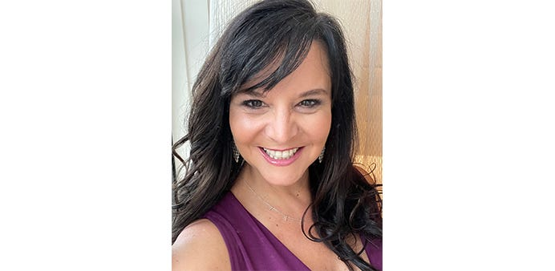

We spoke to Kendra Beaty, CivicActions’ new Senior Program Manager about her past experiences working with the Defense Health Agency (DHA), her passion for problem-solving, and her belief that people-centric, accessible websites can improve health equity. Read until the end to learn some fun facts about Kendra, including her rock crawling hobby!

Can you tell us about your background prior to joining CivicActions?
Most recently, I have spent the past 13 years working for the United States military in the healthcare sector. My most recent three years was with the Defense Health Agency (DHA) working as an Enterprise Program Manager for the DHA Innovation Group. Our group was started by a former DHA Director and her goal was to bring “disruptive change” to the DHA through small scale initiatives that could be grown to enterprise solutions.
Before the switch to DHA, I worked for 10 years for the Army in their Behavioral Health Division. The Army developed an electronic method for tracking behavioral health outcomes (meaning: monitoring a person’s behavioral health progress in a measurable way) and it was my team’s job to establish the program office, rollout the application to all behavioral health providers in the Army, Navy and Air Force, as well as train people how to use the tool and enforce usage and compliance.
In the first chapter of my career, I spent a lot of time working with various consulting firms working on software rollout and corporate training initiatives. I got to spend significant time with a few notable companies like Starbucks, Microsoft, Russell Investments, Fred Hutchinson Cancer Research Center, Boeing, Wells Fargo (formerly Washington Mutual Bank), and the United States Coast Guard.
Can you share a little bit about what you will be doing here at CivicActions and why you are interested in working in civic tech?
I think the first time that I understood that “civic” work was a life pulse for me was when I worked for the US Coast Guard, starting way back in the year 2000. While it is a military organization, the US Coast Guard has a life saving mission at its core. Working there made me realize that “doing good” at work was a really powerful motivator, and so different from the other corporate cultures where making money was the unapologetic focus. More recently, working for the Army in Behavioral Health gave me a similar sense of civic duty, but my innovation work did not. I wanted to return to that sense that I was giving back through my job. CivicActions’ mission driven focus to improve the online experience for millions of Americans is very appealing to me. I look forward to getting started!
What are you most looking forward to about your new role?
I’m really looking forward to meeting the WECMS team and learning more about the problems they are solving for the Centers for Medicare and Medicaid Services (CMS) and what they are designing and creating to address those problems. As a PM, I love watching the creation process evolve and I love the problem solving that happens within development teams. I am also looking forward to meeting our government partners and getting to build relationships with them.
Your new position will involve working with federal healthcare clients and stakeholders. Why is FedHealth so important and how can it play a role in driving health equity?
I think that FedHealth is important because it belongs to all of us. I believe that, as Americans, we should be able to easily access online tools and resources that support our healthcare needs and goals, without having to phone-a-friend for tech support. Government websites are notorious for being well intended but hard to navigate, and they so often fall short of answering people’s questions and fail to adequately address their needs. I believe that creating people-centric, accessible websites that “just work” will allow more people to get their questions answered and satisfactorily engage with government healthcare services.
On a lighter note, what are some fun facts that people may not know about you?
Three quick things:
- My first computer was a Commodore 64 and I *couldn’t wait* for my monthly Commodore 64 Programming magazine to arrive so I could try writing (more like retyping) the code for the game of the month. This was before I knew how to type so it took me forever and — of course! — I would always have some kind of tiny typo that I had to find in order for it to work.
- I used to be into Jeep off-roading and, specifically, rock crawling. If you aren’t familiar with that sport, you should YouTube it. Like many other motorsports, it seems like it should be simple, but it is very technical and requires a lot of on-the-fly problem solving. I’m probably the only girl you know who has actually “run” the Rubicon Trail in a Jeep!
- I still believe in 2 spaces after a period and the oxford comma. 😃